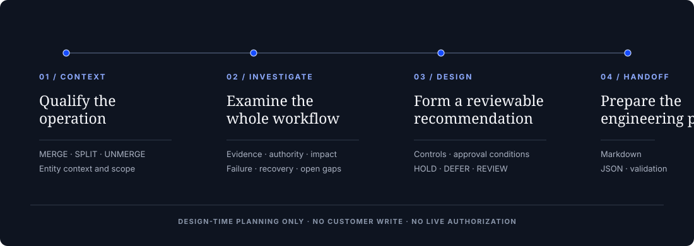

Similarity is a signal
It can help identify a candidate pair. It is not, by itself, proof of co-reference or authorization.
A design-time Agent Skill for engineering teams
It does not simply ask an agent to propose a MERGE, SPLIT, or UNMERGE. It investigates the entity-resolution workflow from multiple angles before producing a reviewable recommendation and a structured engineering plan.
A confident entity match is not permission to merge.
Platform links may include affiliate attribution. A qualifying purchase through an affiliate link may support the author without changing the buyer's price.

Counts refer to the published methodology and synthetic CRM demonstration; they are not universal fixed output limits.
The problem
Two records can look similar and still represent different entities. A shared name, domain, contact, identifier or address may be a useful signal — but no single similarity signal automatically establishes that two records refer to the same real-world entity.
When an AI agent proposes a persistent identity change, the decision can affect more than the two records on screen. Relationships, ownership, history, downstream systems, permissions and derived data may all be involved.
Before deciding whether records should be merged, split or restored, the workflow needs to establish what is known, what conflicts, what can change, who has authority and what must happen when something is uncertain.
It can help identify a candidate pair. It is not, by itself, proof of co-reference or authorization.
A mutation may affect relations, history, linked records, indexes and external workflows.
Missing evidence, conflicting claims and unknown write boundaries should not become invented certainty.
Why not just prompt an agent?
A general-purpose agent can produce a plausible answer. The Planner provides a defined investigation structure so important dimensions are less likely to disappear between a persuasive recommendation and the engineering work needed to make it safe.
A generic prompt
A request to review a proposed merge may focus on the visible records and the available similarity signals.
The Guardrail Planner
The Skill works through a defined set of investigative dimensions and translates findings into explicit requirements.
This is a difference in method and deliverable structure, not a claim that every general-purpose prompt will fail or that the Planner guarantees a correct decision.
The investigation
The Planner examines the workflow before it produces a recommendation. The areas below are connected: a conflict can change the evidence assessment; the evidence assessment can change the authorization path; and an unknown commit boundary can stop the proposed operation altogether.
What operation is proposed, which entities and relationships are involved, and what state could be affected?
What kind of entity is involved, what does identity mean in this domain, and what context is required to interpret the records?
Which claims are supported, by what sources, with what provenance, validity and verification status?
Which attributes or documents disagree, and which contradictions remain unresolved rather than silently reconciled?
Who or what is allowed to approve this specific operation, under which policy and separation-of-duties conditions?
Which linked records, identity-bearing relationships, indexes, integrations and dependent processes may be affected?
Where does the change become persistent, what belongs to the atomic write set, and which checks must hold before that point?
What can fail before, during or after persistence — including stale state, partial effects and ambiguous commit outcomes?
How should the system reconcile uncertain outcomes, handle idempotency, compensate where proven, or quarantine and escalate?
Which positive, negative, boundary and failure cases should engineering validate before deployment?
What facts, policies, permissions, technical boundaries or customer decisions are still unknown or unverified?
How it works
The investigation is not a decorative checklist. Its findings inform the recommendation, the required controls and the conditions under which the proposed change should not proceed.
Establish the operation type, entity context, candidate scope and the identity-bearing state that may change.
Work through evidence, provenance, conflicts, authority, downstream effects, commit boundaries, failure and recovery.
Translate findings into controls, approval conditions, version binding, HOLD points and unresolved decisions.
Produce structured Markdown deliverables and a machine-readable JSON specification for customer-side implementation and validation.
Not every path ends in approval
Depending on the findings, the recommendation may require further evidence, defer the operation, request human review or block the proposed change. Unknowns remain explicit; the Skill does not invent customer policy or convert model confidence into authorization.
Control architecture
The published synthetic MERGE example contains 14 named controls. They illustrate how investigation findings can become concrete requirements for a customer-side implementation. The exact controls depend on the operation and scenario.
Protected-operation qualification and scope binding
Claim-specific identity evidence gate
Registry-extract verification and evidence admission
Parent / holding indication and contradiction handling
Temporal applicability and validity interval
Complete write-set inventory and pre-write HOLD
Transaction coverage, commit point and atomicity gate
Pre-commit invariant failure inside a verified atomic transaction
Post-commit and out-of-boundary failure handling
Ambiguous commit outcome, idempotency and reconciliation
Authorization-path eligibility
Operation-specific approval and authorized approvers
Version binding, stale-state rejection and concurrency
Audit and lineage record
These are design requirements in the example plan, not controls implemented by the Skill or an independently verified runtime security layer.
See the output
Explore a complete example of the Planner's output for an AI-proposed MERGE involving two CRM account records. The scenario is synthetic; names and identifiers are fictional.
THE SCENARIO
An agent proposes merging two customer-account records. The supplied scenario includes similar names, a shared web domain, an overlapping contact and a registry extract with a potentially matching identifier.
A contract also suggests that one company may be a parent or holding entity of the other. That possibility changes the question: the records may be related, yet still represent distinct legal entities.
The example plan requires HOLD before the first persistent write while material evidence, policy, authorization and transaction-boundary decisions remain unresolved.
The engineering handoff
The example includes a plan overview, operation scope, guardrail and evidence requirements, commit-boundary design, implementation blueprint, validation scenarios, open gaps and JSON.
The plan is marked not_implementation_ready. Its 31 customer-operation scenarios are proposed, not executed. Eleven customer decisions remain blocking, and Draft 2020-12 schema and format validation were not run in the original generation environment. The example demonstrates the structure and transparency of the handoff; it is not a production-ready implementation.
Who it is for
The Planner is intended for teams designing or reviewing agentic workflows that can persistently alter entity identity or identity-bearing relationships.
Teams introducing agents into workflows that can propose or initiate identity-changing operations.
Teams responsible for entity registries, master data, identity quality and relationship integrity.
Teams responsible for persistence paths, integrations, transaction boundaries and downstream effects.
Teams that need traceable evidence, explicit authority and controlled changes to identity-bearing structures.
Methodology and reference mode
The Planner was created by Daniel Beránek, author of Digital Identity Optimization (DIO) and the Ontology of Digital Identity (ODI). Its design draws on a broader research and engineering framework; buyers do not need prior knowledge of DIO/ODI.
An optional reference-backed mode can use the public, read-only DIO/ODI Reference MCP. The buyer connects it separately in a compatible agent or client. It provides reference material only: it does not receive customer records, inspect customer systems or authorize customer writes.
Scope and limitations
The distinction is deliberate. The Skill prepares a design-time plan for customer engineering teams. It does not operate the customer's systems or replace their policy, authorization and testing responsibilities.
The customer's application and engineering team must implement, review and test the resulting controls in their own environment.
Make the investigation part of the workflow
Bring a proposed entity-resolution operation through a structured investigation — and give engineering a clearer plan for what must be verified, controlled and tested.
Platform links may include affiliate attribution. A qualifying purchase through an affiliate link may support the author without changing the buyer's price.